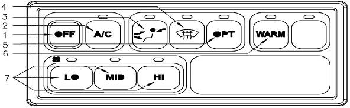

Air Conditioner Controller

| 1. OFF button | Stops all the functions and turn power off |
| 2. A/C button | Pressing A/C button when power is off, or in heater mode or anti-fog mode will turn on the air conditioner. |
| 3. Air discharge outlet select button | Select air discharge outlet |
| 4. Anti-fog button | Pressing this button operates anti-fog function for 3 minutes Press A/C or WARM button during operation to return to air conditioner or heater mode. |
| 5. OPT button | no action |
| 6. WARM button | Pressing WARM button when power is off, or in air conditioner mode or anti-fog mode will turn on the heater. |
| 7. Fan speed control button | Fan speed is controlled by 3 steps:
|